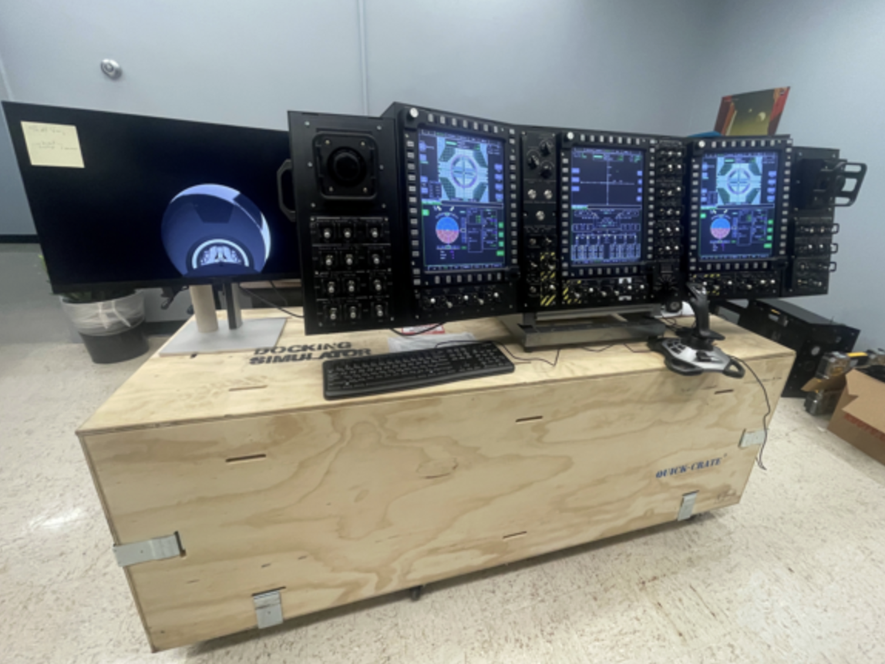
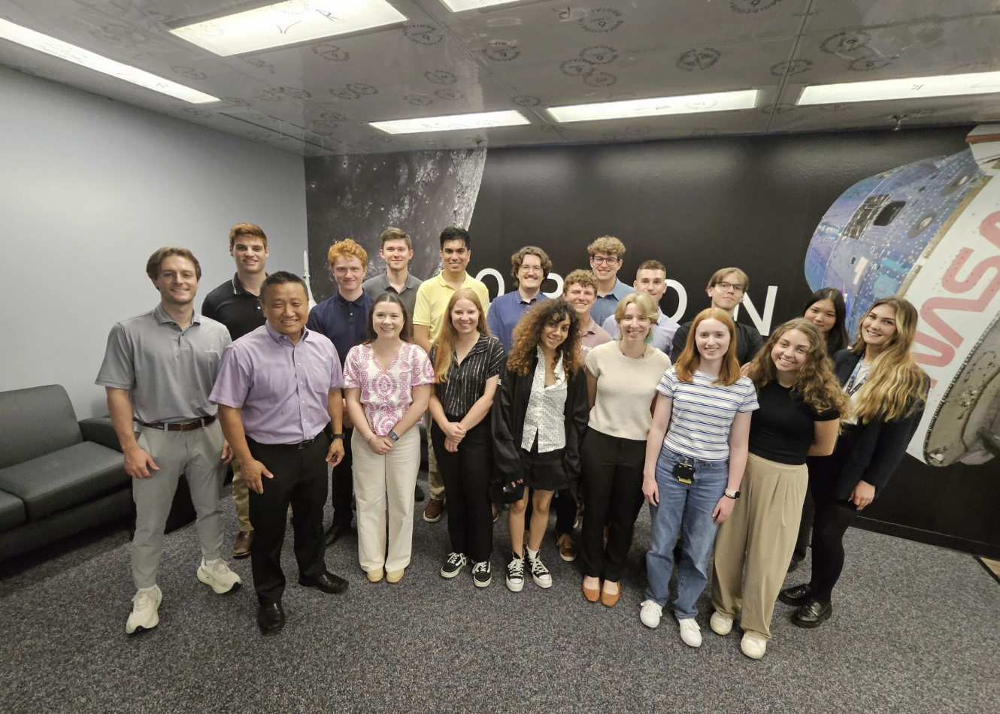
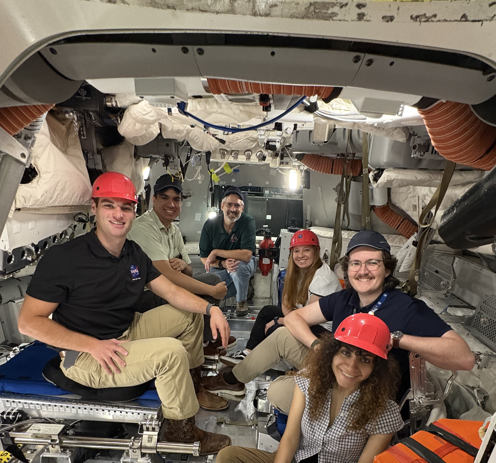
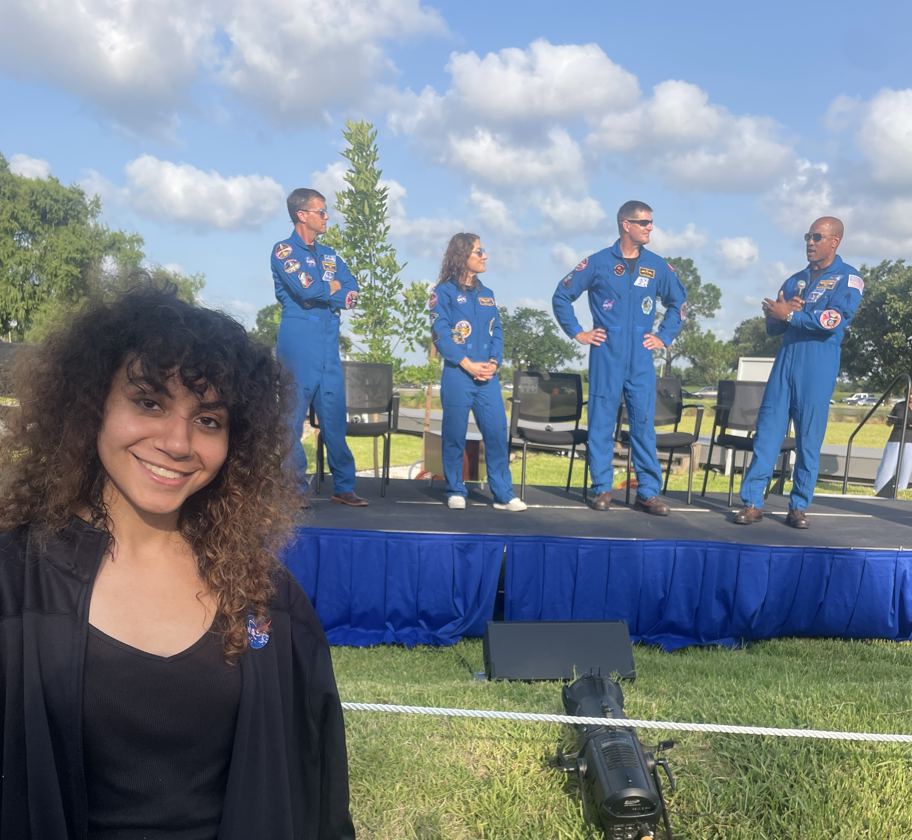

Orion Docking Simulator
Unity | C# | Hardware Prototyping
During Summer 2026, I worked on NASA’s Orion Spaceflight Simulator at Johnson Space Center, a Unity-based simulator used for public outreach and educational exhibits. I contributed new software, gameplay, and hardware-interaction features while working within a large existing simulation codebase and participating in code reviews.
- Role: Orion Game Development & Software Intern
- NASA Center: Johnson Space Center
- Program: NASA Office of STEM Engagement
- Duration: Summer 2026 · 10 weeks · On-site
- Technologies: Unity, C#, Python, C/C++, Arduino, Git/Version Control
Simulator

Orion Program

Orion Mockup

Artemis Crew

Contributions
Features developed for the Orion Spaceflight Simulator.

Mission Audio
CSV-driven mission communication and narration system.
Screensaver
Cinematic simulator footage triggered during inactivity.
Docking Guidance
Real-time corrective tips during docking maneuvers.

Hardware Interface
Physical docking controls connected to the Unity simulator.
Docking Scenarios
Expanded simulator scenarios and Unity environments.
Replay System
Recorded and replayed spacecraft movement and thruster activity.
Engineering Experience
Working on an established simulator strengthened my experience developing software within a larger engineering team and integrating new features into existing systems.
- Large Codebases: Navigated and extended an existing Unity and C# simulation architecture.
- Code Reviews: Participated in code reviews and incorporated technical feedback into my work.
- Collaboration: Worked across software, simulation, gameplay, and hardware development.
- Technical Communication: Communicated implementation decisions, progress, and technical challenges with team members.
- Hardware-Software Integration: Integrated and debugged physical controls with real-time Unity simulation systems.
- Iterative Development: Tested and refined features while maintaining compatibility with existing simulator systems.
Soft Skills
My internship at Johnson Space Center also strengthened the professional skills needed to contribute effectively within a collaborative engineering environment.
- Communication: Clearly communicated technical ideas, progress, and challenges with team members.
- Collaboration: Worked with developers and engineers across different areas of the simulator.
- Adaptability: Learned unfamiliar systems and workflows while contributing to an established codebase.
- Problem Solving: Investigated technical issues, tested solutions, and iterated based on feedback.
- Receiving Feedback: Incorporated feedback from code reviews and discussions to improve implementations.
- Professional Development: Gained experience working within the expectations and workflows of a professional engineering organization.